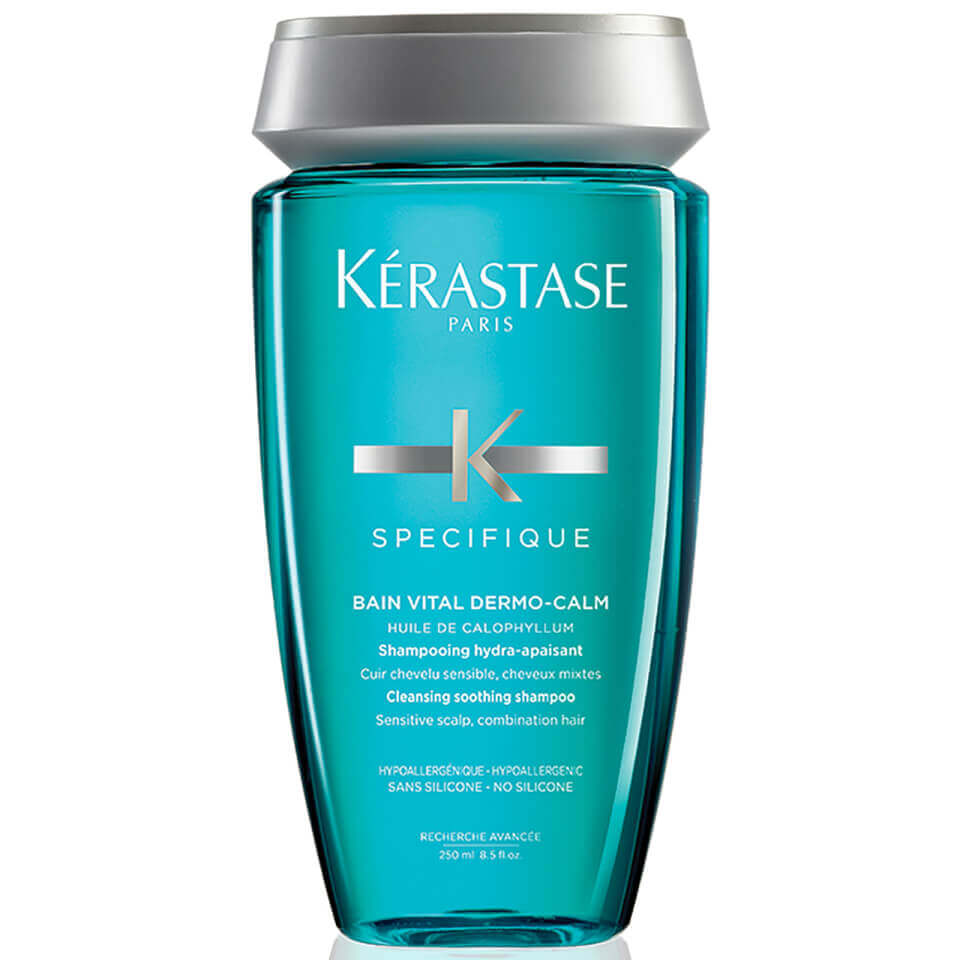
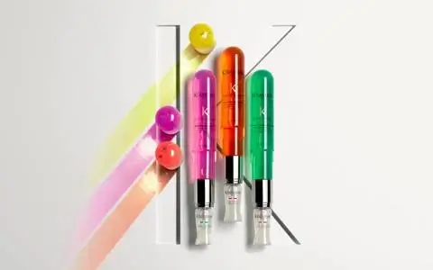

Nuestros productos destacados
Mejores productos 2022
-

SPECIFIQUE SHAMPOO
La gama de productos Kérastase Spécifique se creó para abordar cuestiones relacionadas con el cuero cabelludo, como cuero cabelludo graso, sensibilidad, picazón, caspa, caída de cabello. Los productos de esta colección están diseñados para tratar estas anomalías con el objetivo de revelar un cuero cabelludo sano.
-

MASCARA DE TRATAMIENTO REVLON PROYOU
Ampollas sin aclarado ideales para reparar el cabello dañado por tintes o uso de secadores, planchas o tenacillas. Al estar formulado con la tecnología KERACOMPLEX queda el cabello sedoso, brillante y reparado. Restaura la vitalidad del cabello con este tratamiento quedando instantáneamente reparado.
-

OLAPLEX PASO 7
Este aceite tiene una fórmula ligera Rica en nutrientes, reconstituyente y no pegajosa, así que no se sentirá como un pegamento en tu melena, todo lo contrario, lo sentirás suave apenas termines de aplicarlo.
-

DISCIPLINE
La gama de productos Kérastase Discipline se creó para abordar cuestiones relacionadas con la disciplina del cabello: resequedad, frizz, pelitos parados, cabello que se corta. Los productos de esta colección están diseñados para tratar estas anomalías con el objetivo de revelar una fibra capilar sana.
Productos estrella / Antifrizz
-

SPECIFIQUE
La gama de productos Kérastase Spécifique se creó para abordar cuestiones relacionadas con el cuero cabelludo, como cuero cabelludo graso, sensibilidad, picazón, caspa, caída de cabello. Los productos de esta colección están diseñados para tratar estas anomalías con el objetivo de revelar un cuero cabelludo sano.
-

REVLON ONE
Esta línea de tratamienntos 12 en 1 Repara el cabello seco y dañadp, controla el encrespamiento y aporta brillo.Protege contra el calor de planchas y secadores, Aporta suavidad y sedosidad.Protege los cabellos coloreados contra los rayos UVA y UVB y también Facilita el peinado y el alisado
-

OLAPLEX 6
Olaplex N° 6 Bond Smoother se encarga de suavizar las fibras capilares debilitadas por el uso constante de decolorante, secadoras de pelo, planchas, entre otros.
-

FUSIODOSE
Los potenciadores, cinco fórmulas concentradas, se mezclan con los concentrados, cuatro poderosos ingredientes activos, que permiten realizar múltiples combinaciones para un tratamiento diseñado a la medida que transforma el cabello al instante y de forma duradera.